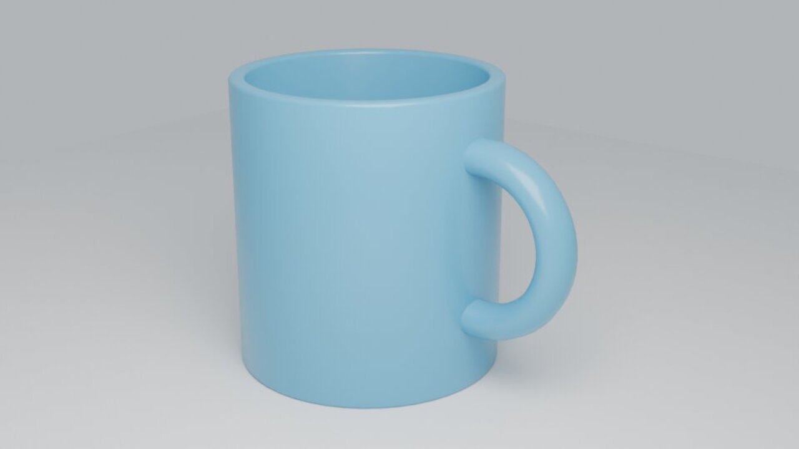
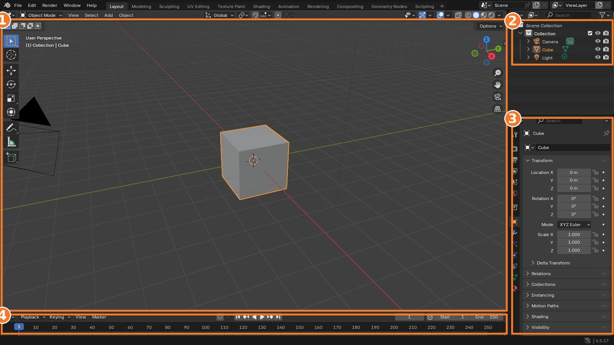
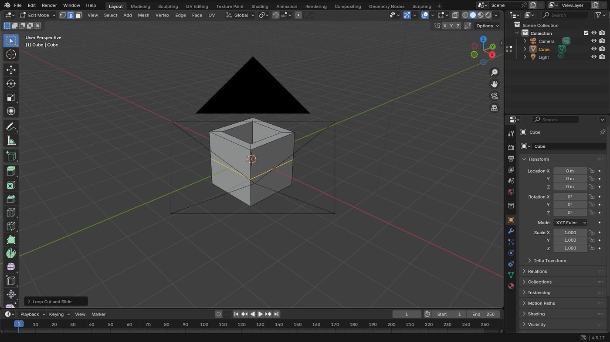
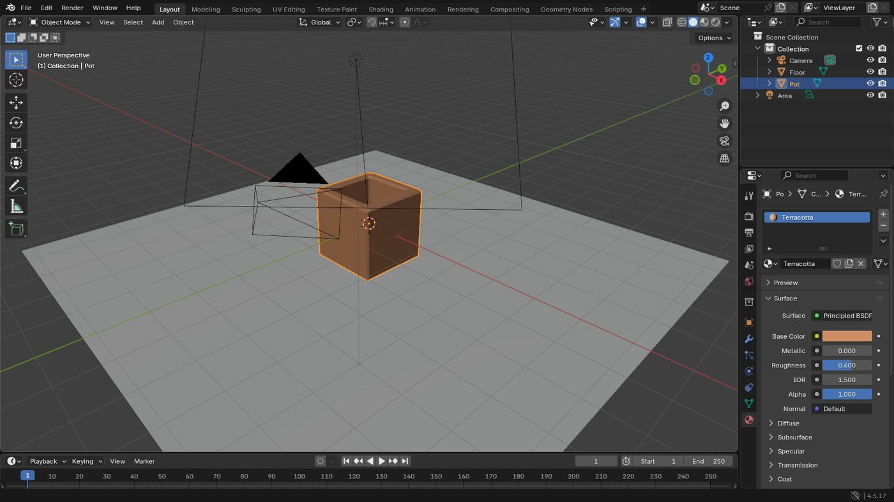
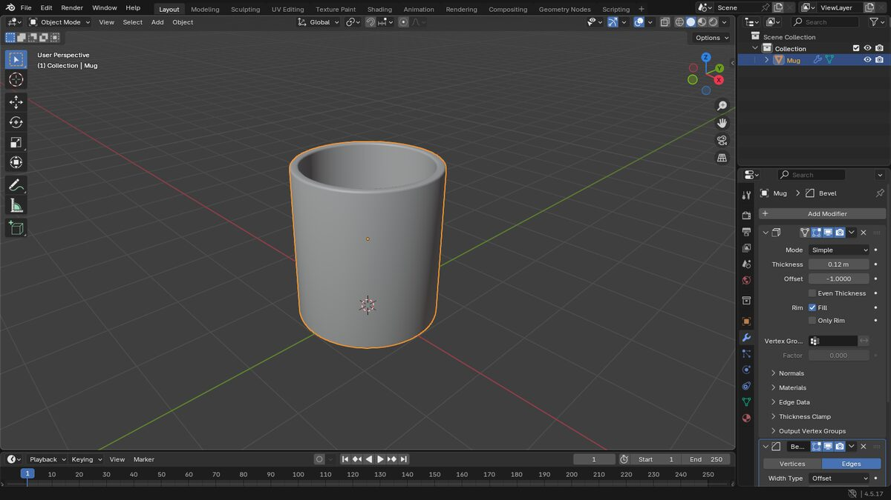
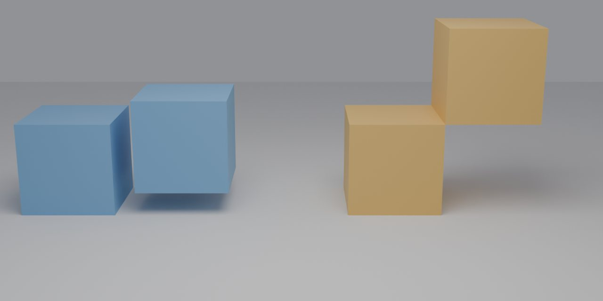
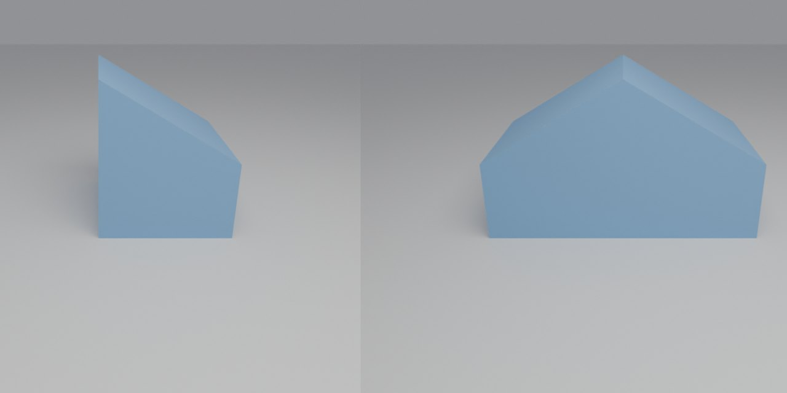
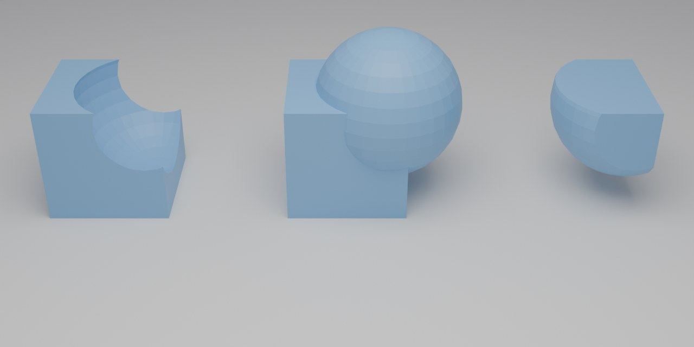
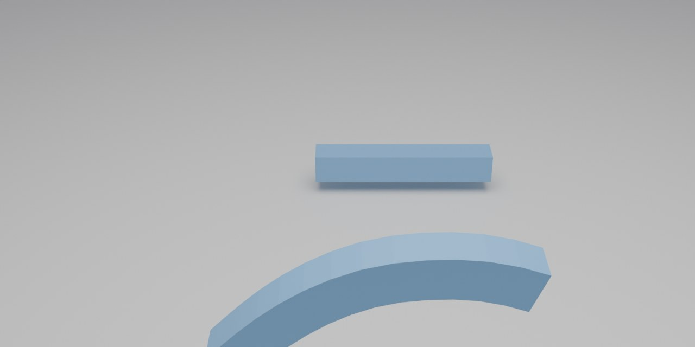

Learn Blender from Scratch
Step-by-step lessons with real screenshots. Start from zero, build a 3D plant pot, then a ceramic mug, and render both as finished images.
- 10 lessons
- 2 projects
- 6 practice challenges

Project 1: The plant pot
Learn the interface and the basic tools while you turn a cube into a plant pot and render it.

Lesson 1The Interface and Moving Around the Scene
What you see when Blender opens, and how to move around the scene without getting lost.
 Lesson 2
Lesson 2Move, Rotate and Scale
The three commands you will use in every project: G, R and S.

Lesson 3Edit Mode: Building the Pot
From a cube to a plant pot with four tools: Inset, Extrude, Loop Cut and Bevel.

Lesson 4Materials and Colors
Color the pot and understand Material and Roughness.
 Lesson 5
Lesson 5Floor, Light and Camera
Set up a scene that is ready to render.
 Lesson 6
Lesson 6Rendering and Saving the Image
Make the final image and save it.
Project 2: The mug
Use modifiers to build a mug with walls, add a handle, give it a ceramic material and render it.
 Lesson 7
Lesson 7Modifiers: Change a Shape Without Editing It
Learn what modifiers are, and add Solidify and Bevel to a simple cylinder.

Lesson 8Building the Mug Body
Open the top of the cylinder so Solidify turns it into a cup with walls.
 Lesson 9
Lesson 9Adding the Mug Handle
Add a torus, move and rotate it into a handle, and shape it.
- Lesson 10
Mug Material and Final Render
Give the mug a ceramic material, set up the scene and render the finished image.
 Bonus lesson
Bonus lessonShade Smooth and Shade Flat
Make a faceted sphere look smooth with one command.
 Bonus lesson
Bonus lessonApply Scale
Reset Scale to 1 so modifiers like Bevel behave evenly.
 Bonus lesson
Bonus lessonSet Object Origin
Learn what the origin dot does and how to move it before you rotate or scale.
 Bonus lesson
Bonus lessonThe 3D Cursor and Snap
Place new objects exactly where you want them with the cursor and Shift+S.

Bonus lessonSnapping
Line objects up exactly with vertex, edge and face snapping.
 Bonus lesson
Bonus lessonCollections
Group objects like folders and hide a whole group from the render.
 Bonus lesson
Bonus lessonImage Texture and Projection
Wrap an image around an object with Box, Sphere and Tube projection.

Bonus lessonThe Mirror Modifier
Model one half and let Blender create the other.
 Bonus lesson
Bonus lessonSubdivision Surface
Turn a simple cube into a smooth shape with Ctrl+1, 2 or 3.
 Bonus lesson
Bonus lessonProportional Editing
Move one vertex and let its neighbors follow smoothly.
 Bonus lesson
Bonus lessonThe Array Modifier
Repeat one object into rows and staircases.

Bonus lessonThe Boolean Modifier
Cut, fuse and overlap two objects into one shape.

Bonus lessonThe Curve Modifier
Bend a straight object along a curve path.